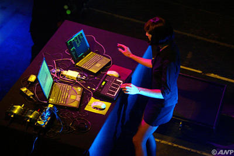

Polymeter
 Polymeter is a MIDI sequencer for music that's in multiple prime meters (2, 3, 5, 7, 11, etc.) simultaneously. Each track has its own loop length, and when the lengths differ, the tracks "slip" (or shift phase) relative to each other. The resulting interference pattern is sufficiently intricate that variations similar to the embellishments of a live performer can be generated algorithmically.
The current software is based on software I developed in the 1990s in order to compose polymeter electronic dance music. I'm rescuing from bit rot what might be (for all I know) the world's only sequencer optimized for polymeter. It's a long battle, but it's worth it to be able to compose complex polymeter again.
February 20, 2022
Version 1.0.07 adds tie mapping and fixes various bugs. It's available for download; for details, check the release notes.
January 25, 2022
Version 1.0.06 adds tempo mapping and note merging, and fixes a tempo modulation bug.
January 5, 2022
Version 1.0.05 fixes a few bugs.
December 21, 2021
Version 1.0.04 adds more phase diagram features.
November 29, 2021
Version 1.0.03 adds new options to the phase diagram.
November 13, 2021
Version 1.0.02 adds new graphing options.
November 3, 2021
Version 1.0.01 is a bug fix release.
October 25, 2021
Version 1.0.00 is the first production release.
October 10, 2021
Version 0.0.38 adds context-sensitive help.
January 25, 2021
Version 0.0.37 adds a prime factors command, and fixes some bugs.
December 20, 2020
Version 0.0.36 adds looping of playback, and fixes some bugs.
November 20, 2020
Version 0.0.35 fixes many bugs, some of them critical.
October 1, 2020
Version 0.0.34 adds MIDI mapping for presets and parts, and improves Live view.
August 4, 2020
Version 0.0.33 is another bug fix release.
July 20, 2020
Version 0.0.32 is a bug fix release.
June 11, 2020
Version 0.0.31 adds offset modulation and voice raising.
April 17, 2020
Version 0.0.30 optionally transmits MIDI clocks, for synchronizing slave devices.
April 6, 2020
Version 0.0.29 adds chord modulation, mapping to track steps, and more.
March 26, 2020
Version 0.0.28 adds scale / index / voicing modulation, numeric step editing, and mapping.
March 4, 2020
Version 0.0.27 allows much longer tracks, and adds input recording and a convergence calculator.
January 29, 2020
The first Polymeter workshop was held at Arkaoda Berlin. The slide show is here and the demo files are here. Other workshops will be announced in the Facebook group.
December 28, 2019
Version 0.0.26 adds tempo tracks and tempo modulation, and a phase bar.
April 23, 2019
Version 0.0.25 fixes some minor issues.
February 26, 2019
Version 0.0.24 adds an option to prevent overlapping instances of the same note on a channel.
January 29, 2019
Version 0.0.23 adds graphing (via Graphviz) and a MIDI input bar.
January 17, 2019
Version 0.0.22 adds recursive position modulation and also fixes some serious bugs.
January 10, 2019
Version 0.0.21 adds a MIDI output bar and a piano bar.
December 19, 2018
Version 0.0.20 adds import/export of tracks from/to CSV format.
December 15, 2018
Version 0.0.19 adds note ranges, range modulation, position modulation, and more.
December 7, 2018
Version 0.0.18 adds recording of MIDI input to tracks.
November 20, 2018
Version 0.0.17 adds recursive modulation.
November 5, 2018
Version 0.0.16 adds MIDI import and fill commands and fixes many issues.
October 8, 2018
Version 0.0.15 allows unlimited modulation, song MIDI export, track stretch and more.
August 18, 2018
Version 0.0.13 fixes some issues with the Live view, just in time for the Berlin shows.
July 22, 2018
Version 0.0.12 adds overdubbing and a few minor features, and fixes some bugs.
July 11, 2018
Version 0.0.11 adds functionality to the Live view, including per-part progress bars.
July 8, 2018
Version 0.0.10 adds various small features and fixes some bugs.
July 5, 2018
Version 0.0.9 adds live performance view, grouping tracks into parts, and full screen mode.
June 18, 2018
Version 0.0.8 adds track solo, presets, and song view editing commands.
June 6, 2018
Version 0.0.7 adds song view, for editing the arrangement on a timeline.
May 26, 2018
Version 0.0.6 adds recording of a live arrangement.
May 19, 2018
Version 0.0.5 adds velocity editing, controller tracks, and much more.
May 10, 2018
Version 0.0.4 adds step editing commands.
May 4, 2018
Version 0.0.3 supports tied notes, via Shift+left-click in steps view.
Apr 29, 2018
Version 0.0.1 allows unlimited track length, thanks to a completely redesigned UI.
Apr 22, 2018
The initial alpha (0.0.0) is released.
{kind=link}